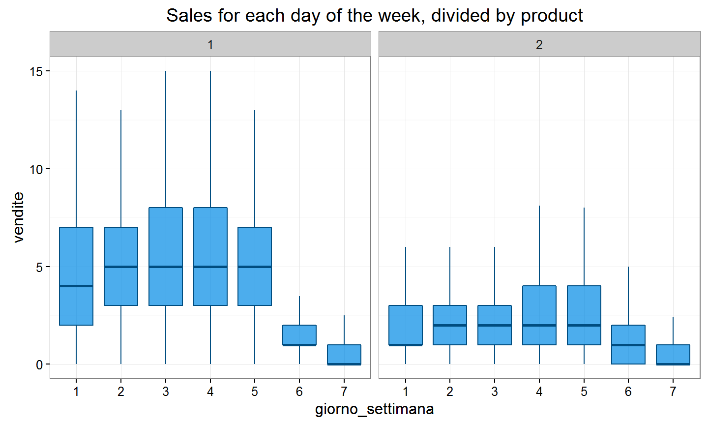
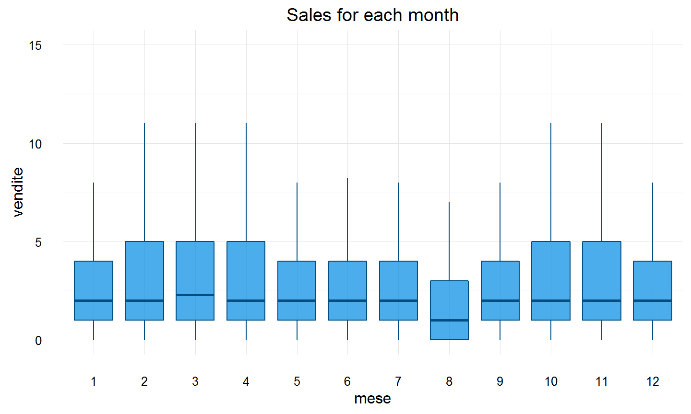
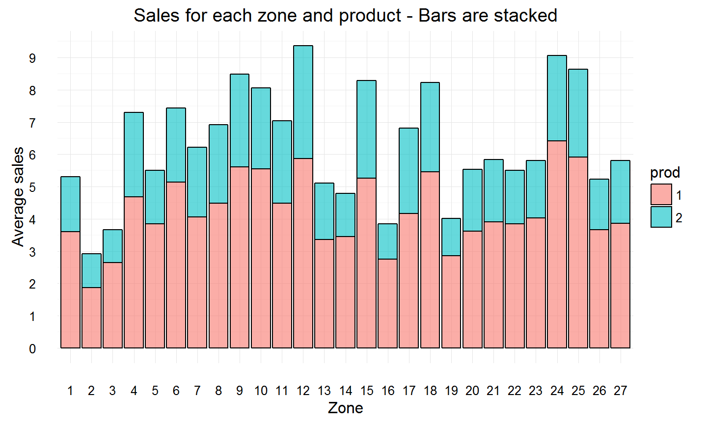
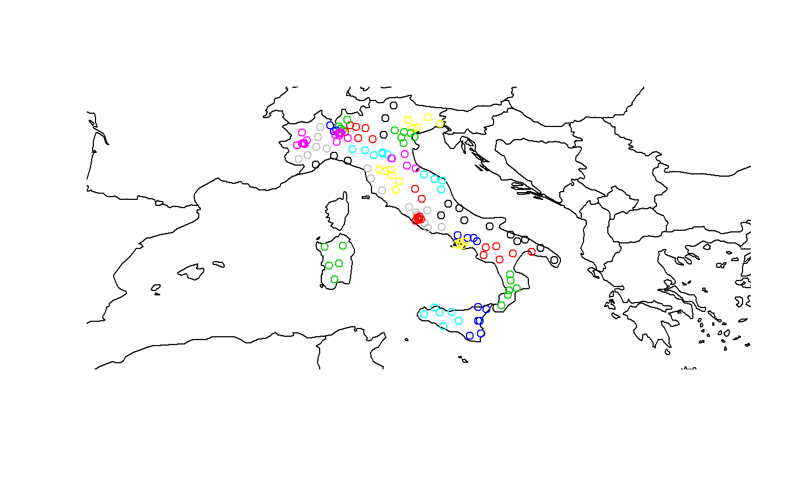
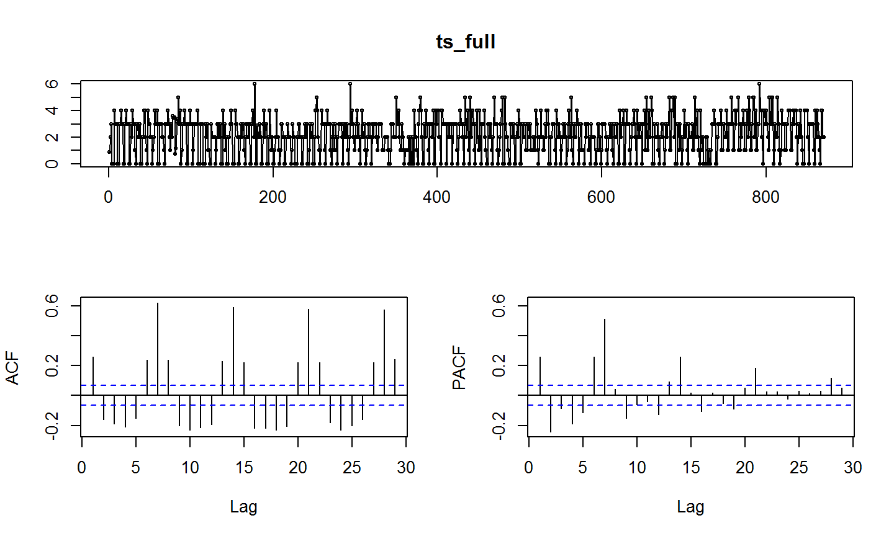
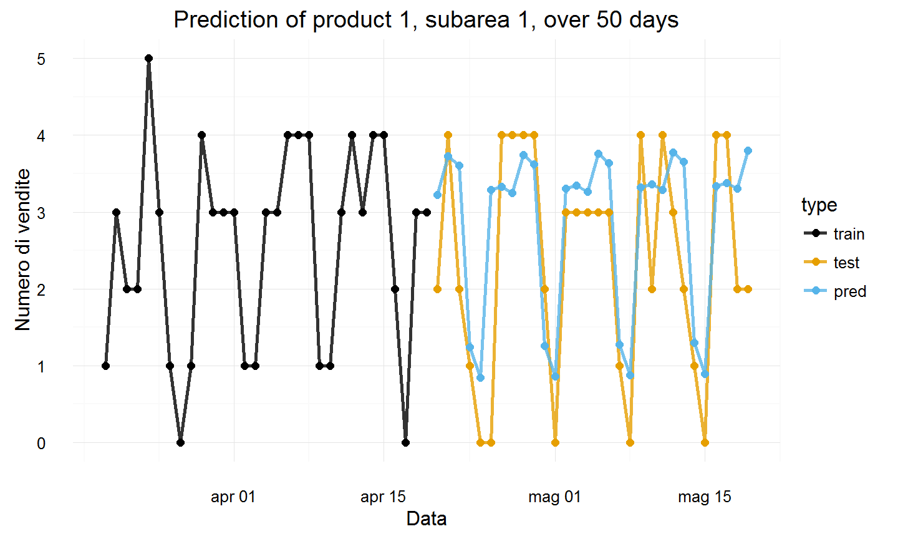
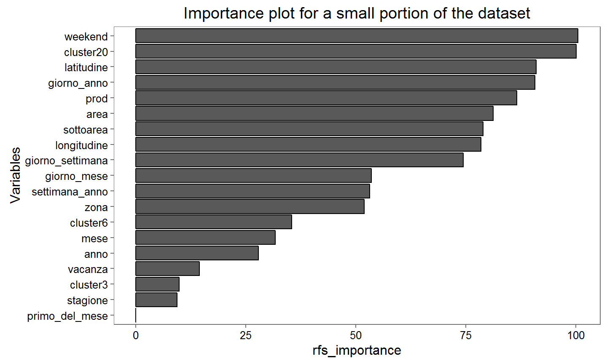

- Initial exploratory analysis
- Cumulative distribution of sales
- Distribution of sales by product and zone
- Outlier identification and missing values
- Understanding the dataset
Data Mining Project: BIP
Alberto Parravicini, Simone Ripamonti, Luca Stornaiuolo
Data exploration
Initial exploratory analysis (1/3)

Initial exploratory analysis (2/3)

Initial exploratory analysis (3/3)

Outlier identification and missing values (1/3)
- No explicit missing values in the dataset (i.e. NA or similar values)
- Missing subarea 51
- Outliers
- Extremely high sales at 2014-06-30
- No sales from 2014-03-19 to 2014-03-25
- No correlation with any subsequent behaviour of the sales
Outlier identification and missing values (2/3)
- Unusual sales behaviour
- Subarea 20, and subareas 32 and 78 (relatively to product 2) have mostly no sales
- Inpsection of the time-series of subareas to understand if they displayed a predictable internal structure
- Box-Pierce test statistic
Box-Pierce test
The null hypothesis of the Box-Pierce test is that the signal is made of independent observations
# [1] "Box-Pierce test for subarea 20, product 1" # # Box-Pierce test # # data: subarea_20_p1$Vendite # X-squared = 0.057371, df = 1, p-value = 0.8107
# [1] "Box-Pierce test for subarea 22, product 1" # # Box-Pierce test # # data: filter(dataset_polimi, Sottoarea == "Sottoarea_22", Categoria_prodotto == "Prodotto_1")$Vendite # X-squared = 88.688, df = 1, p-value < 2.2e-16
Analyze the time-series!
1144201163146617691106121136144
![]()
Outlier identification and missing values (3/3)
- Subarea 20, and subareas 32 and 78 (relatively to product 2) can be considered deterministic signals with mean 0
- Not beneficial to be used in training
- Removed from the dataset
- Predeicted sales equal to 0 a-posteriori
- Using geographical coordinates we noted that these areas are close to Milan, Lamezia Terme and Potenza
- Unrelated cities that further confirm our hyphotesis
Data preaparation
- Basic feature engineering
- Other feature engineering
- Coordinates clustering
Basic feature engineering
- Split dates into:
- Day of the week
- Day of the month
- Day of the year
- Month
- Week of the year
- Year
- Add columns:
- Weekend
- Holiday
- First of the month
Other feature engineering (1/4)
- Features to keep track of cumulative sales over certain periods:
- Cumulative sums by product and subarea, over each week, month and year
- Aggregate sales of the entire company, day by day, by product and cumulative
- Not possible to compute directly these values for dates above the one in the dataset
- Sarima models to predict each of these time-series
Other feature engineering (2/4)
- Replaced outliers and missing values identified with a prediction using a Random Forest model
- Sarima model wouldn't be as effective since these values are located in the middle of the dataset
- Replaced values are the ones at "2014-01-01", "2014-6-30", and from "2014-03-19" to "2014-03-25"
Other feature engineering (3/4)
- Coordinates clustering
- Division by zones/areas partially consistent with what expected
- But not as smooth as one might desire
- We choose to build a higher level hierarchy 
Other feature engineering (4/4)
- We performed a Knee-Elbow analysis
- Chosen three different clustering for subareas:
- 3 cluster grouping: North, Center and South Italy
- 6 cluster grouping: value suggested by the Knee-Elbow analysis
- 20 cluster grouping: to distinguish the different Italian regions
Analyze the clusters!
![]()
Model Building
- Seasonal ARIMA
- Random Forest
- XGBoost
- Results and Ensemble
Seasonal ARIMA (1/4)
- Seasonal Auto-Regressive Integrated Moving Average
- Capable of fitting structure in complex time series
- Even those with seasonalities or trends
- One different model for each subarea and product
- Assumption that all time-series could be fitted with a model of the same order
- Few exceptions where Random Forest and XGBoost outperformed Sarima
- Auto-correlation, Partial auto-correlation, to understand the MA and AR
- Neyman Smooth Tests of Normality to check if the residuals of the training can be considered white noise
Seasonal ARIMA (2/4)

Seasonal ARIMA (3/4)

Seasonal ARIMA (4/4)
- Clear weekly seasonality
- Residuals can be considered white noise (low p-value)
nortestARMA(res_tot, fit$sigma2) #$pvalsdmuest #[1] 4.927925e-06
- Overall company sales, daily aggregated, as exogen input of the model
- CSS-ML method to optimize prediction of aggregated sales (better result, but sometimes fails to converge)
- CSS method to optimize prediction of single subareas (less precise, but always converge)
Random Forest (1/3)
- Flexible and robust
- Importance plot

Random Forest (2/3)
- We tried two approaches:
- Single model that uses the whole dataset
- Set of models, one for each subarea/product combination
- At first second approach seemed to yield better results
- Parameter tuning on the first approach proved it to be superior
- Single model required a higher number of trees than each of the multiple model forests
- Out of bag error was the main metric used to compare the different random forests model
- We also employed mean square error, MAPE and MAX APE, computed on a test set.
Random Forest (3/3)
- We used ranger package for R
- Much faster than the commonly used randomForest
- Built-in multi-threading
- Final model used 1200 trees
- Using more trees didn't reduce by a significant amount the out of bag error and the MSE on the test set, and proved to be computationally prohibitive
rfs_model <- ranger(train_set, formula=vendite ~ (zona + area + sottoarea + prod + giorno_mese + giorno_anno + settimana_anno + mese + anno + stagione + primo_del_mese + cluster3 + cluster6 + cluster20 + latitudine + longitudine + giorno_settimana + weekend + vacanza), num.trees = 1200, write.forest = T, verbose = T, num.threads = 4, ...)
XGBoost (1/4)
- eXtreme Gradient Boosting: classification and regression algorithm based on gradient boosted trees
- Characteristics:
- Efficiency
- Accuracy
- Feasibility
- Most successful algorithm used in Kaggle's competitions
XGBoost (2/4)
- Same approach as with Random Forest:
- Single model that uses the whole dataset
- Set of models, one for each subarea/product combination
- Used XGBoost's crossvalidation function to get insights of the quality of the two predictive models
- Built-in metrics:
- root mean square error (RMSE)
- logarithmic loss (logloss)
- mean average precision (MAE)
- Tried different:
- Set of features
- Values of tuning parameters (nrounds, eta, gamma, …)
XGBoost (3/4)
- Used XGBoost's watchlist and evalutaion metric to compare training and test error
- Performed early stopping of training to prevent overfitting of the training data
xgb_model <- xgb.train(data=xg_train, nrounds = n_rounds, nthread = 4, eta = eta_value, watchlist = list(train=xg_train, test=xg_test), early.stop.round = 5, maximize = F) xgb_pred <- predict(xgb_model, xg_test)
- Predictions on the test data compared with the real data using:
- mean absolute percentage error (MAPE)
- max absolute percentage error
- Results showed that the single model was performing slightly better than the multiple one
XGBoost (4/4)
- Final model
- features: zona, area, sottoarea, prod, giorno_settimana, giorno_mese, giorno_anno, settimana_anno, mese, anno, weekend, primo_del_mese, vacanza, stagione, cluster3, cluster6, cluster20, latitudine, longitudine
- label: vendite
- nrounds: 900
- eta: 0.1
- gamma: default
Results and Ensemble (1/5)
- XGBoost proved to be the most powerful model
- We looked at mean square error over the various product/subareas combination
- In some occasions Sarima and Random Forest would provide better predictions
- We decided to take this into account and build an ensemble model
- Uses predictions of the three models
- Predictions weighted according to the estimated mean square error of each produc/subarea combination in the test set
Results and Ensemble (2/5)
Results and Ensemble (3/5)
With:
Results and Esemble (4/5)
- Weighting done without using the prediction for the outlier subareas
- Performances of the models:
- MSE, MAPE, MAXAPE being computed on a 10-days length test set
- Out of bag, Logloss being computed by the Random forest training and the Xgboost cross-validation, respectively
- We also considered the subareas for which we manually predicted 0 sales
Results and Esemble (5/5)
| MODEL | MSE | MAPE | MAXAPE | OTHER |
|---|---|---|---|---|
| Sarima | 2.146717 | 0.2788613 | 3.472367 | - |
| Random Forest | 2.179245 | 0.2865883 | 4.188574 | Out of bag: 1.771598 |
| XGBoost | 1.992626 | 0.2705864 | 3.95667 | Logloss: -29.58445 |
| Ensemble | 1.902922 | 0.2614705 | 3.822493 | - |